Thank you. Before I begin the talk, I will put forth a little idea I thought of in the last day or so. It's a programming problem having to do with Graph Theory: you have a graph. The nodes contain a record with a language and a person, and, just to make the example concrete: the nodes might be (C, Ritchie), (ADA, Ichbiah), (Pascal, Wirth), or Brinch-Hansen perhaps. (Lisp, Steele), (C++, Stroustrup) might also be part of the population. There is an edge from X to Y, whenever X.Person will throw a barb in public at Y.Language. And the questions are: is this a complete graph? Does it have self-edges? If it's not complete, what cliques exist? There are all sorts of questions you can ask. I guess if it were a finite state machine, you could ask about diagnosability, too. Can you push at the people and get them to throw these barbs?
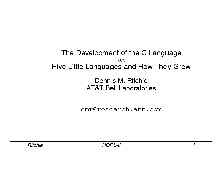 [Slide 1] The paper itself tells the history of C, so I don't want to do it again. Instead, I want to do a small comparative language study, although it's not really that either. I'm going to talk about a bunch of twenty-year old languages. Other people can discuss what the languages contain. These were things that were around at the time, and I'm going to draw some comparisons between them just to show the way we were thinking and perhaps explain some things about C. Indirectly, I want to explain why C is as it is. So the actual title of the talk, as opposed to the paper, is `Five Little Languages and How They Grew.'
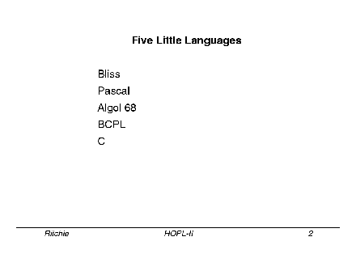
[Slide 2] Here are the five languages: Bliss, Pascal, Algol 68, BCPL,
C. All these were developed in more or less the same period. I'm
going to argue that they're very much similar in a lot of ways. And
each succeeded in various ways, either by use or by influence. C
succeeded really without politics in a sense that we didn't do any
marketing, so there must have been a need for it. What about the rest
of these? Why are these languages the same?
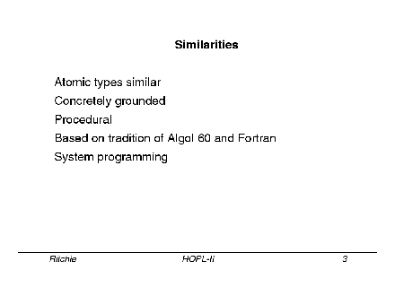
[Slide 3] In the first place, the things that they're manipulating,
their atomic types, their ground-level objects, are essentially
identical. They are simply machine words interpreted in various ways.
The operations that they allow on these are actually very similar.
This is contrast to SNOBOL, for example, which has strings, or Lisp,
which has lists. The languages I'm talking about are just
cleverly-designed ways of shuffling bits around; everybody knows about
the operations once they've learned a bit about machine architecture.
That's what I mean by concretely grounded. They're procedural, which
is, to say, imperative. They don't have very fancy control
structures, and they perform assignments; they're based on this old,
old model of machines that pick up things, do operations, and put them
someplace else. They are very much influenced by Algol 60 and FORTRAN
and the other languages of that were discussed in the first HOPL
conference.
Mostly they were designed (speaking broadly) for `systems programming.' Certainly some of them, like BCPL and C and Bliss, are explicitly system programming languages, and Pascal has been used for that. Algol 68 didn't really have that in mind, but it really can be used for the purpose; when Steve Bourne came to Bell Labs with the Algol 68C compiler, he made it do the same things that C could do; it had Unix system call interfaces and so forth. The point is, that `system' can be understood in a fairly broad sense, not just operating systems.
 Let me very briefly characterize each language.
[Slide 4] Bliss is
the one that hasn't been mentioned before at this conference. It was
done by Bill Wulf and his students at Carnegie-Mellon. I believe it
started as a PDP-10 system programming language, and it was then later
used to do system programming on the PDP-11 for a variety of projects.
It went somewhat beyond that--it was picked up in particular by
Digital Equipment Corp., I suppose partly through the close
connections between DEC and CMU at that time. And in fact it's been
used, maybe still is used, for parts of VMS. Bliss is word oriented,
by which I mean, there is only one data type, which is the machine
word. So that's 36 bits in the case of the PDP-10 version; 16 bits in
the case of the '11. You accessed individual bytes, or characters,
was by having a special operator notation where you mentioned the
start bit and the length. So it is a special case that accessed
characters of a slightly more general case that accessed individual
rows of bits.
Let me very briefly characterize each language.
[Slide 4] Bliss is
the one that hasn't been mentioned before at this conference. It was
done by Bill Wulf and his students at Carnegie-Mellon. I believe it
started as a PDP-10 system programming language, and it was then later
used to do system programming on the PDP-11 for a variety of projects.
It went somewhat beyond that--it was picked up in particular by
Digital Equipment Corp., I suppose partly through the close
connections between DEC and CMU at that time. And in fact it's been
used, maybe still is used, for parts of VMS. Bliss is word oriented,
by which I mean, there is only one data type, which is the machine
word. So that's 36 bits in the case of the PDP-10 version; 16 bits in
the case of the '11. You accessed individual bytes, or characters,
was by having a special operator notation where you mentioned the
start bit and the length. So it is a special case that accessed
characters of a slightly more general case that accessed individual
rows of bits.
Bliss was innovative in a variety of ways. It was goto-less; it was an expression language. A lot of things that are built in to other languages were not built into Bliss; instead there were syntax macros used for giving meaning to arrays, particularly multi-dimensional arrays, and structures. An array or structure was represented by the programmer as a sort of inline function to access the members, instead of being built in as a data type.
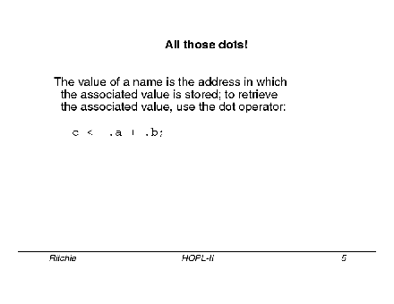
But the thing that people really remember about Bliss [Slide 5] is all
those dots. Bliss is unusual in that the value of a name appearing in
an expression is the address at which the associated value is stored.
And to retrieve the value itself, you put a dot operator in front of
the name. For example, in an ordinary assignment of a sum will be
written as `C gets .A+.B'. Here you're taking the value stored in A
and the value stored in B, and adding them. (If you left off the
dots, you would be adding the addresses.) On the other hand, the
assignment operator wants an address on the left and a value on the
right; that's why there's no dot in front of the C.
What were the problems of Bliss? Really, that it never transcended its original environments. The programs tended to be non-portable. There was a notation for the bit extraction to get characters, but there were also notations that created PDP-10 specific byte pointers, because they couldn't resist using this feature of the PDP-10. And this (and other things) made programs tend to be non-portable because they were either PDP-11 dialect, or the PDP-10 dialect. And perhaps equally important, the compilers were nonportable; in particular, the compiler never ran on the PDP-11 [Slide 6].
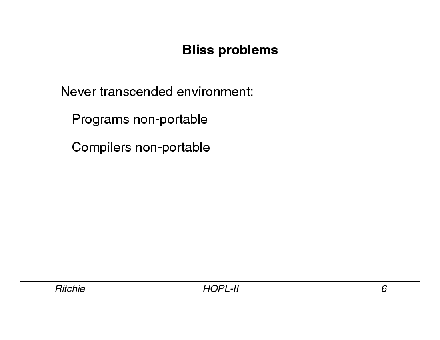
Whatever the motivation for Bliss as a language, much of the interest in it actually came because of a sequence of optimizers for its compilers created by a succession of students. In other words, its legacy is a multi-phase optimizing compiler that ran on the PDP-10. It was a project that could be divided up phases, in which each student gets a phase and writes a thesis on this particular kind of optimization. Altogether very CMU-like way of operating--a series of programs that collectively could be called C.PhD. A good way of working, I think. [It was used as well in C.mmp and Mach, as well.]
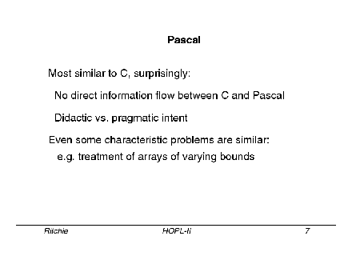
Let me move on to Pascal [Slide 7]. I argue that Pascal is very
similar to C; some people may be surprised by this, some not. C and
Pascal are approximately contemporaneous. It's quite possible that
there could have been mutual information flow in the design, but in
fact, there wasn't. So it's interesting that they're so much the
same. The languages differ much in detail but at heart are really the
same; if you look at the actual types in the languages, and the
operators on the types, there really is a very large degree of
overlap. Some things are said differently--in particular Pascal's
sets are in some ways a more interesting abstraction than unsigned
integers, but they're still bit fields.
This is in spite of the fact Wirth's intent in creating Pascal was very different from ours in C. He was was creating a language for teaching, so that he had a didactic purpose. And in particular, I take it both from Pascal and from his later languages that he's interested in trying to constrain expression as much as possible, although no more. In general, he explores where the line should go between constraints that are there for safety, and expressiveness. He's really a very parsimonious fellow, I think, and so am I.
Even some of the characteristic problems of Pascal and C are very similar. In particular, in treatment of arrays with varying bounds: this is worth discussing a bit.
C has always provided for open-ended, that is, variable-sized, arrays (one-dimensional arrays, or vectors). In particular, C has been able to subsume strings under the same set of general rules as integer arrays. Pascal, certainly in the original form, did not allow even that. In other words, even one-dimensional arrays had a fixed size known at compile time. There have been, in at least some of the dialects, a notion of `conformant' arrays so that procedures can take arrays of different sizes. But still the issue isn't fully resolved; the status of this is not really clear.
C's solution to this has real problems, and people who are complaining about safety definitely have a point. Nevertheless, C's approach has in fact lasted, and actually does work. In Pascal's case, certainly in the original language, and perhaps even in some of the following ones, the language needs extensions in order to be really useful. You can't take the pure language and use it, for example, as a system programming language. It needs other things.
Here's an aphorism I didn't create for this conference, but several years ago. It seems particularly apt, given the people present [Stu Feldman and Niklaus Wirth]: `` `Make' is like Pascal. Everybody likes it, so they want to change it.'' In both cases, a very good idea wasn't quite right at the start.
Here's another anecdote, based on something that happened yesterday afternoon. During the coffee break. Wirth said to me, `Sometimes you can be too strict...' Interestingly, he was not talking about language design and implementation, but instead about the type- and bounds-checking that was occurring within the conference. [That is, to the insistence on written-down questions to speakers and strongly enforced time limits on speakers and questioners].
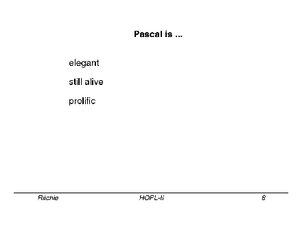
Pascal is very elegant. It's certainly still alive. It is prolific
of successors and it has influenced language design profoundly [Slide 8].
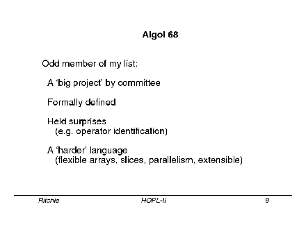
[Slide 9] Algol 68. This is definitely the odd member of the list. I
wrote `designed by committee' on the original slide. I started to
cross this out based on what Charles Lindsay said earlier, but I
didn't cross it out completely because, the point I want to make here
is not so much that it was designed by a committee but that it was
`official.' In other words, there was a international standards
organization that was actually supporting the work and expecting
something out of the design of Algol 68. Whatever the result, it was
definitely not a small project. Of course, it was formally defined
from the very beginning. The language was designed well before there
were any compilers; this meant that, like most interesting languages
done that way, it held surprises; even Algol 60 held surprises. Algol
60's call-by-name mechanism looked beautiful in the report, and then
people came to implement it and realized that it had unexpected
consequences. There were a few other things like this, even in Algol
60. Similarly, in Algol 68, there were things that were put in
because they looked natural and orthogonal, and then when people came
to implement the language they found that, although it was possible,
it was difficult. It's a hard language, and big in some ways. It
does have more concepts than the others, even if they're orthogonal.
Things like flexible arrays, slices, parallelism, the extensibility
features (especially operator identification), and so forth. Despite
the efforts of Charles Lindsay, I think the language really did suffer
from its definition in terms of acceptance. Nevertheless, it was
really quite practical.
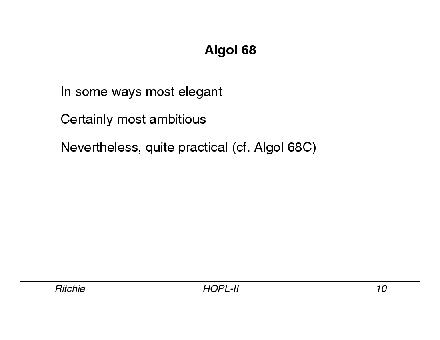
[Slide 10] In some ways, Algol 68 is the most elegant of the languages
I've been discussing. I think in some ways, it's even the most
influential, although as a language in itself, it has nearly gone
away. But the number of people at this conference who have said "This
was influenced by Algol 68," is surprisingly quite large. As the
accompanying paper points out, C was influenced by it in important
ways. The reference on the slide to Algol 68C is to indicate that we
had an A68C compiler on the early Unix system in the '70s, when Steve
Bourne came from Cambridge and brought it with him. It didn't handle
the complete language, but it was certainly enough to get the flavor.
(It was kind enough to give me warnings whenever I said the wrong
thing. The most common was, "Warning! Voiding a Boolean," which
always struck me as amusing. Of course it meant that I had written
`A=B' instead of `A:=B').
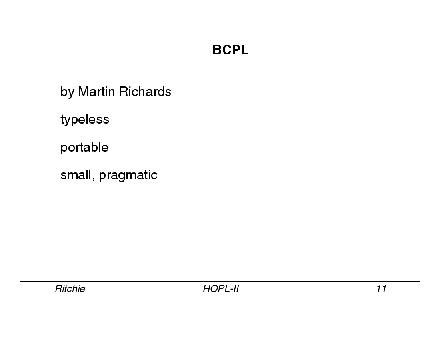
[Slide 11] BCPL was the direct predecessor to C. It is very much like
Bliss because it's a typeless language, and it was intended for system
programming. Unlike Bliss, it was designed to be portable. The
compiler itself was written to be portable, and transportable; it
produced a well-described intermediate code. And, in spite of the
fact that the only type was the `word', it ran on machines with
different word sizes. It was a small language, and its style was
pragmatic. Its original purpose was to be the implementation language
for CPL, a more ambitious undertaking by Strachey and his students
that never quite materialized. BCPL was used in a variety of places.
It was one of the early languages used at Xerox PARC on the Alto, for
example.
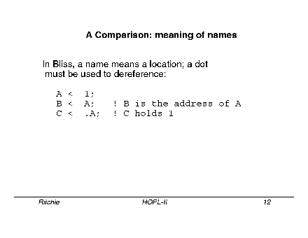
[Slide 12] Let me compare. (This is the only technical part of the
talk.) What is the meaning of a name, when it appears in an
expression? There are three very different interpretations that
happen in these languages.
First, a further example of the way Bliss works. In the first statement, you've simply assigned a value 1 to A. In the second statement when you say `B gets A', what you have assigned is the address at which A is located. So, if you print the value B at this point, you'll see a number representing some memory address. However, if you do this assignment with the dot, as in the third statement, then you have assigned the value 1 that came from the assignment on the first line. That means that `dereferencing' (a word that came from Algol 68) is always explicit in Bliss, and it's necessary because in Bliss a simple name is a reference, not a value.
In Algol 68, there is a more interesting situation. The meaning of a
name, at heart, is often the same as in Bliss; in other words, it
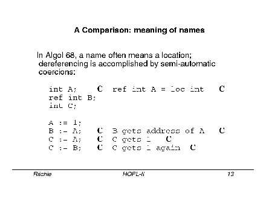
often denotes a location. In [Slide 13, first line of program] the
declaration of A says that A is a reference to an integer stored in a
local cell that can hold an integer. The notation `int A' is a
shorthand for the more explicit declaration shown in the comment.
Later, you write, in line 4, `A gets 1'. The rules of the language see a reference to an int on the left, an int on the right, and do the appropriate magic (called `coercion') that puts 1 into the cell referred to by A. In line 5, because B is declared as a reference to a reference to an integer, B is assigned the address of A, while in line 6, C gets the value (the number 1) stored in A. On the last line, the same 1 is stored again, this time indirectly through the reference in B.
So the two A's, on lines 5 and 6, are coerced in different ways, depending on the context in which they appear. `Dereferencing', or turning an address into the value stored in it, happens automatically, according to explicit rules, when appropriate; even though the underlying semantics resemble those Bliss, one doesn't have have to write the dots.
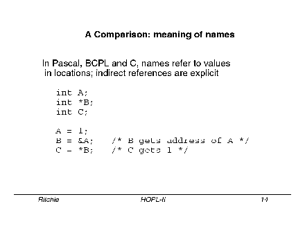
The next slide [Slide 14] shows the way things work in BCPL and its
descendants and also Pascal. Here we have the same kind of types, in
that A holds an integer, B holds a reference to (or pointer to) an
integer. However, in these languages, the value of the name (like A)
that holds the integer, is the integer's value, and there is an
explicit operator that generates the address. Similarly, if one has a
variable (like B) that holds a reference to (pointer to) an integer,
one uses an explicit operator to get to the integer. In line 4 of the
program, where A gets 1, there's no coercion; instead the rules
observe that there is an integer on the left, whose expression is a
special form called an `lvalue,' which can appear in this position.
In line 5, the explicit `&' operator produces the address (reference
value) of A and likewise assigns it to B; in line 7, the explicit `*'
operator fetches the value from the reference (pointer) stored in B.
These languages (Bliss, Algol 68, and BCPL/B/C), show three different approaches to the question `What is the meaning of a name when it appears in a program?' Bliss says: `It means the location of a value; to find the value itself, you must be explicit.' Algol 68 says: `It means the location of a value; the language, however, supplies coercion rules such that you will always get the value itself, or its location, as appropriate. Otherwise you have made a error that will be diagnosed.' BCPL, B, C, and Pascal say, `A name means a value. You must be explicit if you wish to get the location in which that value is stored, and also if the value happens to represent a reference to another value.'
Naturally I prefer the approach that C has taken, but I appreciate how Algol 68 has clarified thinking about these issues of naming and reference.
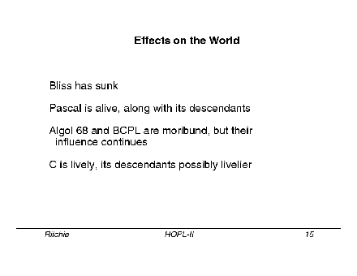
[Slide 15] Let's talk about the influences of these languages. While
you ponder the slide, I'll digress to talk about characterizations of
the languages along the lines of Fred Brooks's [keynote] talk, which
mentioned empiricism versus rationalism, being pragmatic and
utilitarian versus theoretical and doctrinal. How do we classify
these languages? Some were created more to help their creators solve
their own problems, some more to make a point. Algol 68 is
unabashedly rationalist, even doctrinaire. Pascal is an interesting
question--in some ways, the most interesting because it's clearly got
the rationalistic spirit, but also some of the empiricism as well.
BCPL and C are, in general, not pushing any `-ology,' and belong
clearly in the pragmatic camp. Bliss, a goto-less, expression
language, with an unusual approach to the meaning of names, partakes
heavily of the rationalist spirit, but, like Pascal, was created by
the same people who intended to use it.
I'll make another side point, a comparison that doesn't have a slide either. Of these languages, only Pascal does anything interesting about numerical precision control. Algol 68 really thought about static semantics of names, and in most cases, dynamic semantics of things. But one thing it just didn't talk about at all in a meaningful sense, is: what numbers go out or go in? It has `int's and `long ints's and `long long int's and so forth, but the language doesn't tell you how big these things are; there's no control over them. In B and BCPL, there is nothing but the `word'. What's a word? It depends on the machine. C is similar to Algol 68, in the sense that it has type modifiers like `long'. The C standard does say, `Here is the minimal size you can expect for `int', for `long', for `short'. But this is still fairly weak. Pascal has ranges, so that you can be explicit about the range of values you expect to store. Of course, you hit against limits, and you can't have numbers that are too big.
Other languages allow you to use very big numbers. Various predecessors of these languages, like PL/1, were very explicit about numerical precision, and successors like ADA make it possible say similar things in a different way. The question: `How can you be portable if you don't know how big an integer is?,' is continually raised. The interesting fact, and it's one that's surprising to me, is how little this actually matters. In other words, though you have to do some thinking about program design, it's fairly seldom that this issue turns out to be the important source of bugs, at least in my experience.
Let me go back to talk about influences of these languages on the world. Bliss has pretty much disappeared. Its optimization ideas have remained useful, and some of the companies that worked with it have survived. Digital Equipment Corp. still has a lot of Bliss code that they're wondering what to do with.
Pascal is definitely alive, and it has many direct descendants and other languages strongly influenced by it. Algol 68 and BCPL as languages are moribund, but their influence continues: Algol 68 influences in a broad way, and BCPL rather directly through through its influence on C. C remains lively, obviously.
C's own descendants, by which I mainly mean C++, may very well be even livelier in the next few years. Aside from languages that are directly descended from C, (particularly C++ but also some others), C's intellectual influence on the semantic design of new languages has been small. On the other hand, it has influenced notation: even pseudo-code these days tends to contain curly braces.
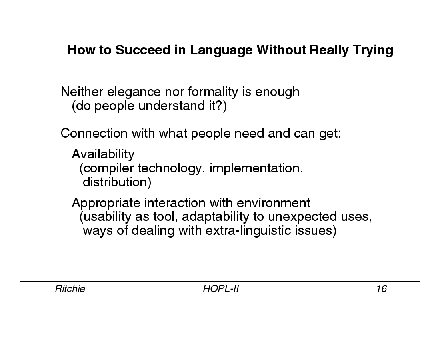
[Slide 16] Let me finish by trying to show how C succeeded in becoming
so widely used, much more than any of the others I talked about. I
can't give a real answer, because I don't know it, but I'll try.
Elegance and formality of definition may be necessary, according to some, but it's certainly not sufficient. It's important that people really be able to understand the the language. One of the problems with Algol 68, despite the efforts of Charles Lindsay and others, was that its definition was hard to read. More fundamentally, though, a language has to be able to connect with and facilitate what people need to do, and potential users have to be able to get an implementation of it.
So, you need to be able to get a compiler: the language has to be implementable in the compiler technology of the day, on the systems they have available to them.
When you design a language with new ideas before implementing it, you are taking a chance that you're pushing compiler technology. This may be a social good, but it may not do your language any good. It has to have an implementation, so that people can try it, and it needs distribution. As I've mentioned, the definition of both Algol 68, and Algol 60 before it, held surprises for implementers.
Also, languages need to provide appropriate interaction with a real environment. Computer languages exist to perform useful things that affect the world in some way, not just to express algorithms, and so their success depends in part on their utility. Environments vary. The one that we created in the Unix System had a particular flavor, and we took full advantage of the ability of the C language to express the software tools appropriate for the environment. As an old example, suppose you want to search many files for strings described by regular expressions, in the manner of the Unix `grep' program.
What languages could you write grep in? As an example, there are really neat ways of expressing the regular expression search algorithm in the APL language. However, traditional APL systems are usually set up as a closed environment, and give you no help in creating a tool for text searching in a more general setting.
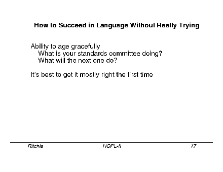
[Lack of time prevented discussion of Slide 17].
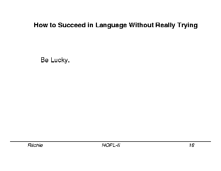
[Slide 18] Here's how to succeed: by being lucky. Grab on to
something that's moving pretty fast. Let yourself be carried on when
you're in the right place at the right time.
March 19, 2002